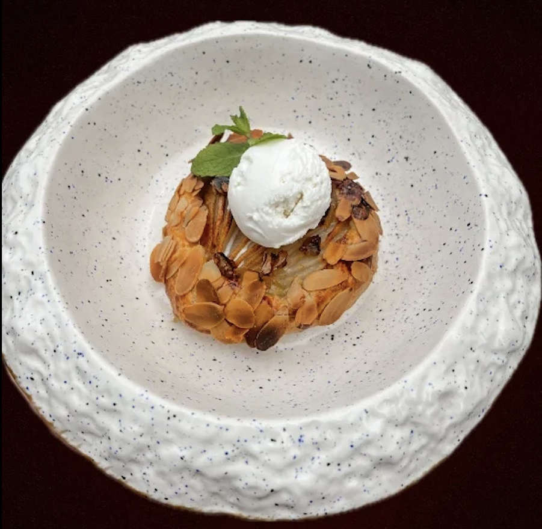
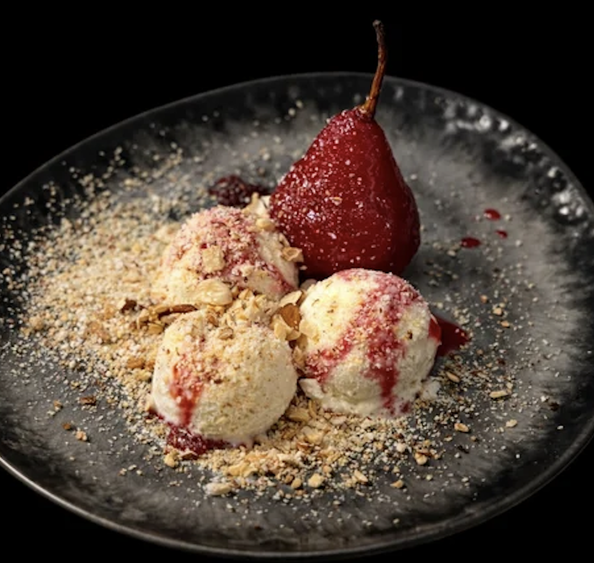
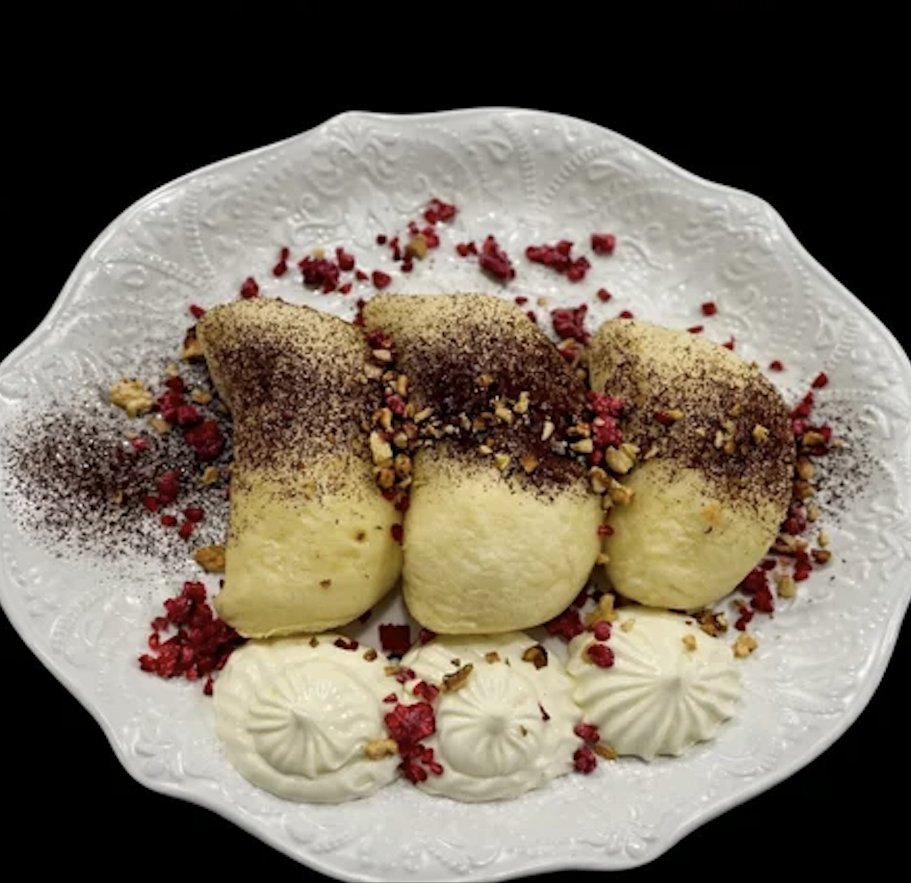
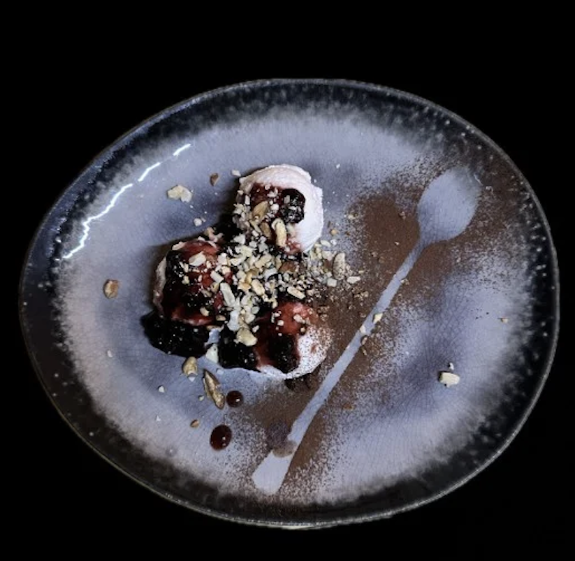

Інгредієнти для приготування цього ж десерту:
- 100 г сметани
- 300 г борошна
- 120 г масла
- 1 ч. л. розпушувача
- 120 г масла
- 3 ст. л. води
- дрібка солі
Кафе "Villa Maria"
Ми - твоє улюблене місце для смачних перерв
Зображення наших десертів:




Ось посилання на приготування нашого найсмачнішого десерту
ГАЛЕТА З ГРУШЕЮ| Десерт | Ціна | Продано | Статус |
|---|---|---|---|
| Морозиво з карамелізованою грушею | 120 грн | 45 | Хіт |
| Сорбет із сезонними фруктами | 95 грн | 30 | Популярно |
| Вареники на пару | 110 грн | 25 | Замовляють рідше |
| Галета з грушею | 140 грн | 50 | Найкращий результат |